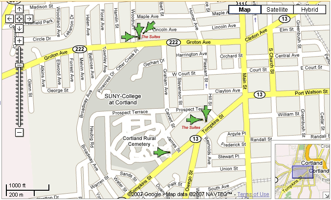

Apartment Locations
The Suites: Cornerstone Properties' off-campus student housing apartments. We have 6 locations in Cortland NY.
112 Groton Ave | 7 Woodruff Str | 91 Lincoln Ave
- Mini-market: across the street.
- Pizzeria/restaurant: across the street.
- Bar/restaurant: 2 blocks.
- ATM: across the street.
- Municipal Park with ball fields, basketball courts, pavilions, and seasonal swimming pool: 2 blocks.
- Cortland State College: just a few minutes walk. Closer to class rooms than the nearest Free parking.
50 & 52 Tompkins Str | 100 Tompkins Str.
- One block from Downtown Cortland (Main Street)
- Restaurants
- Stores
- Bars
- Banks & ATMs
- Cortland State College: just a few minutes walk.
100 Tompkins Str.
- Only a few minutes walk to Downtown or to the College Campus
- Less than half-mile north (towards campus):
- Two Gas Stations / Mini-Markets
- ATM's (in stores)
- Dunkin Donuts
